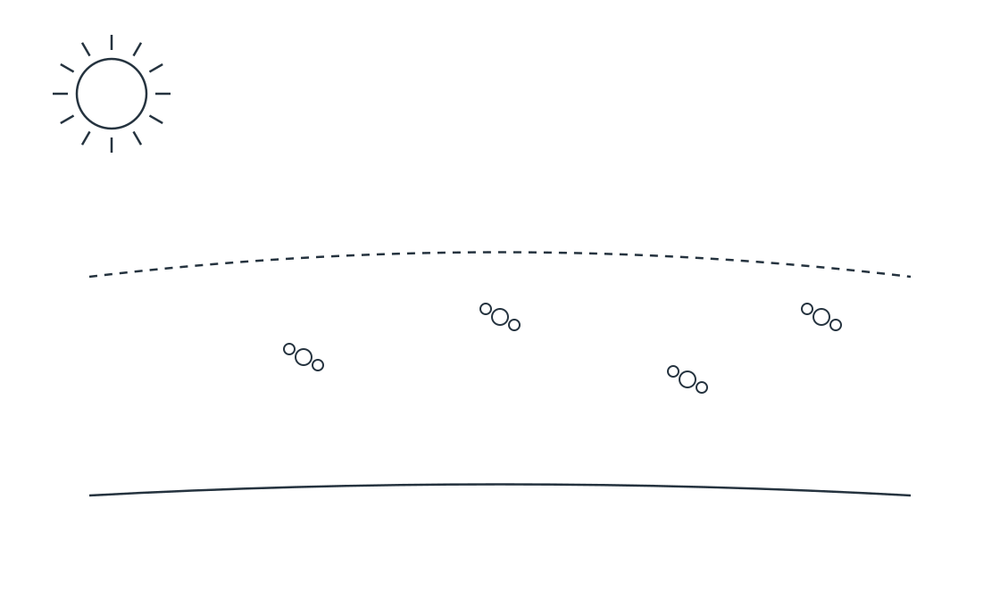

Draw the energy pathways yourself. Use short scientific annotations that explain why each transfer happens, then teach the process to the class.

Your printed diagram
The template has no labels, radiation arrows or explanations. The small molecule symbols are placeholders, not a picture of a solid atmospheric layer.
Use the printed diagram provided by your teacher. Add your own arrows, labels and explanations.
Include on your diagram
These checkboxes are a temporary checklist; record your work on paper or in your own document.
YOUR 2–3 MINUTE PRESENTATION
Point. Explain. Support.
Follow the energy. Use your arrows to explain the whole pathway from Sun to space. Distinguish reflection, absorption and emission.
Zoom in on a molecule. Explain an allowed energy transition and use one PhET observation as evidence.
Name the gases. Show your source table and give natural and human examples. Explain why N₂ and O₂ are not significant greenhouse gases.
Explain the warming. Compare the natural and enhanced greenhouse effects. State the energy balance at a steady temperature.
Both partners should speak. Explain the diagram rather than reading a paragraph from the website.
Rehearse with these questions
Does visible light bounce off Earth and turn into infrared?
No. Reflected visible light remains visible. Absorbed radiation transfers energy to the surface; the warm surface then emits its own thermal infrared radiation.
Do greenhouse gases absorb all radiation?
No. Absorption depends on wavelength and allowed molecular energy transitions. Much visible sunlight passes through, and some outgoing infrared also escapes.
Does “trapped” mean energy can never escape?
No. Energy still escapes to space. Greenhouse gases reduce outgoing radiation for a given temperature profile. A warmer equilibrium restores the balance between absorbed solar power and outgoing thermal power.
Is the atmosphere a mirror reflecting infrared?
No. Greenhouse gases absorb infrared and the atmosphere emits infrared in all directions. Collisions also exchange energy between molecules. This is different from mirror reflection.